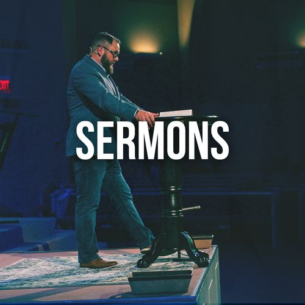

Jan 18, 2026Walking in Faith
Pastor John Doe
Exploring what it means to trust God in the middle of life's biggest storms.
Watch VideoWatch or listen to our recent teachings
Filtering by: Recent Series

Jan 18, 2026Pastor John Doe
Exploring what it means to trust God in the middle of life's biggest storms.
Watch VideoPastor SAMSON
A deep dive into the Lord's Prayer and how it transforms our daily walk.
Watch Video Jan 4, 2026
Jan 4, 2026
Pastor John Doe
Starting the year with a focus on God's grace and renewal.
Watch Video